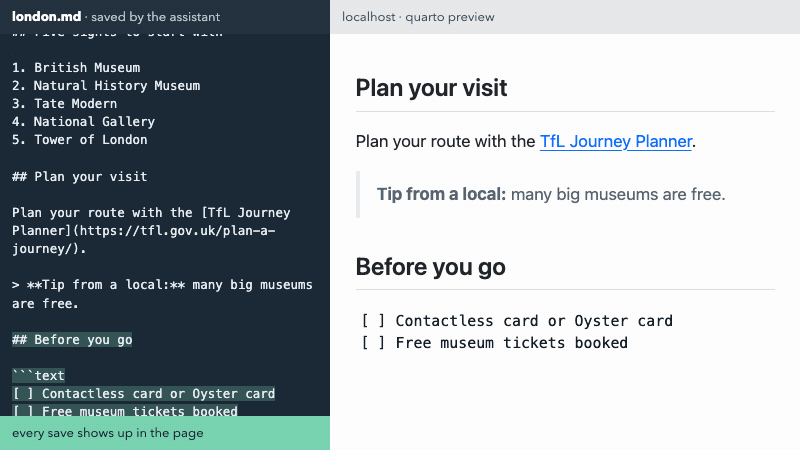
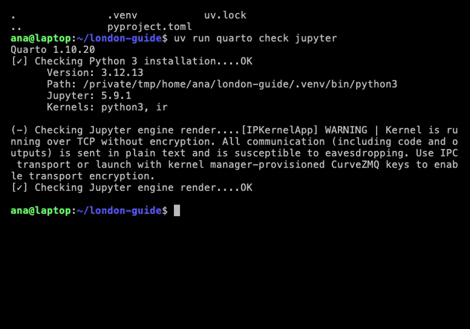

4 Markdown, Rendering and Project Rules
Quarto, reproducible publishing, coding assistants, Markdown, Python, EPUB, data analysis, k-means clustering
The tourism office wants a visitor guide it can stand behind: a page anyone can open on a phone, every fact traced to a source, rebuilt rather than retyped when the facts change. Figure 4.1 is where Part II ends: the guide on its own website, with links to the same content in Word, PDF, PowerPoint, e-book and slide formats.
![A web page titled Visit London, under a navigation bar with Guide, Dashboard and a Downloads menu. Beneath the title, the author, London Tourism Office, and the date it was published. A welcome sentence with London in bold and riverside walks in italics; a numbered list, Five sights to start with: British Museum, Natural History Museum, Tate Modern, National Gallery and Tower of London; a bulleted list, Getting around: Tube, Bus and Santander Cycles; and the start of a Plan your visit section with a link to the TfL Journey Planner above a photograph. In the right margin, Other Formats: MS Word, PDF, Powerpoint, ePub and Slides.](../media/figures/london-guide.png)
examples/london/london.qmd.
It starts as an empty folder. By the end of this chapter the folder holds a web page built from one plain-text file, written rules that hold the assistant to cited facts, and a Python environment for the code to come.
The plain text is Markdown, a way of writing structured text with a few punctuation marks. The assistant writes most of it, but Markdown is what you check: the layer you review, compare between versions and fix by hand when a sentence is wrong.
More is new here than in any other chapter: the assistant, the rules, the preview and the environment. When a step goes wrong, nothing is lost: one line pasted into the assistant restores the chapter’s finished state (Section 4.10).
4.1 A folder for the guide
The guide gets its own folder in your home folder, beside the quarto-workshop repository you cloned during setup (Section 3.6), so that its checkpoints are always at ../quarto-workshop/checkpoints/:
~ your home folder
├── quarto-workshop/ the clone from Chapter 3
└── london-guide/ this part's projectMake the folder and start the assistant in it:
cd ~
mkdir -p london-guide && cd london-guide
claudeLater prompts copy files from ../quarto-workshop/, which is outside the project folder, so the assistant asks your permission the first time it reads there. Approve it, or start Claude Code with claude --add-dir ../quarto-workshop to allow it up front (Codex has the same option, --add-dir).
4.2 A first page: a title and a welcome
Create london.md with a level-1 heading "Visit London" and a welcome paragraph with one bold and one italic phrase.The assistant writes:
# Visit London
Welcome to **London**: free museums, royal history and *riverside walks*.# starts a heading, and the number of # signs sets its level: ## is the next level down. Double asterisks mark bold text and single asterisks italic. A blank line separates paragraphs. That is already a complete document.
4.3 Watch it become a web page
Render london.md with quarto render and tell me which file it wrote.quarto render london.md → london.html
in a second terminal tab:
cd ~/london-guide && quarto preview london.mdit prints a local address; open it in your browser · Ctrl+C stops it
Plain Markdown is valid Quarto input: no settings and no code are needed to get a web page. quarto render writes london.html once. quarto preview does more: it renders the file, serves it on a local address, and renders it again every time the file is saved, including when the assistant saves it, so the page in your browser follows each change (Figure 4.2).

london.md is saved (left), quarto preview renders it again and the page reloads (right). A real recording of quarto preview with the edits this chapter makes.
Keep the preview running from now on. It is the fastest way to check what each prompt did.
A preview and a render of the same file at the same moment collide: both write temporary files with the same names, and one fails with an error such as readfile 'london.quarto_ipynb'. While a preview is running, let it do the rendering. Before the assistant renders several formats at once (Section 5.4), stop the preview with Ctrl+C, and restart it afterwards.
4.4 Rules for the guide
Section 2.5 introduced AGENTS.md, the file of rules an assistant reads at the start of every session. The guide needs one now, before any data or photos arrive, because every later prompt relies on it:
Create AGENTS.md for this project. Scope: a London visitor guide for the tourism office, written once and reused for every audience. Rules: every number comes from a cited file in data/, photos are openly licensed, credited and show no people, never invent facts, keep data/ and images/ unchanged, and call ALVA counts "ALVA member attractions". Show me the file.writes AGENTS.md: a scope and a list of rules
approve · read it: does it say what you meant?
Each rule is there for a reason the project will meet. Every number comes from a cited file: the guide quotes visitor counts, and an assistant asked for a number it does not have may produce a plausible one; a rule that every figure is computed from a file with a source removes that temptation, and gives you something to check. Openly licensed photos with no people: a published guide needs images it may reuse, and pictures of identifiable people raise consent questions it does not need. Keep data/ and images/ unchanged: the inputs are evidence, and edits belong in the analysis, not in the evidence. “ALVA member attractions”: the counts come from the Association of Leading Visitor Attractions, which lists only its members, so “London’s most visited attractions” would overclaim.
The finished project’s version reads, in part:
## Rules
- Every number comes from a cited file in `data/`: each row carries `source`, `url` and
`retrieved`. Never estimate or invent a figure or a fact.
- ALVA counts only its member sites: write "ALVA member attractions".
- Photos are openly licensed, credited from `images/ATTRIBUTION.md`, and show no people.
- Keep `data/` and `images/` unchanged.Read what the assistant wrote and edit it yourself if the wording is off. It is your project’s contract with the assistant, and the rules work best when they are concrete enough to check.
4.5 Five sights and how to get around
In london.md, add a "Five sights to start with" numbered list (British Museum, Natural History Museum, Tate Modern, National Gallery, Tower of London) and a "Getting around" bullet list: 🚇 Tube, 🚌 Bus, 🚲 Santander Cycles.## Five sights to start with
1. British Museum
2. Natural History Museum
3. Tate Modern
4. National Gallery
5. Tower of London
## Getting around
- 🚇 Tube
- 🚌 Bus
- 🚲 Santander Cycles1. starts a numbered list and - a bulleted one; leave a blank line before a list. The five sights are the five attractions whose visits the guide charts later, from ALVA’s data. The list is a starting point, not a ranking. Among London’s ten most visited ALVA member attractions in 2025, the five, in the order listed, stand second, first, third, fourth and eighth; three attractions not on the list drew more visits than the Tower.
4.6 Planning a visit: a link, a photo and a tip
Copy ../quarto-workshop/examples/london/images here. In london.md, add "Plan your visit": a TfL Journey Planner link, images/big-ben.jpg at 30% width with alt text and a credit caption from images/ATTRIBUTION.md, and a "Tip from a local" blockquote.Plan your route with the [TfL Journey Planner](https://tfl.gov.uk/plan-a-journey/).
{width=30% fig-alt="Big Ben's clock tower and the Palace of Westminster against a blue sky with white clouds."}
> **Tip from a local:** many big museums are free. Book a free timed ticket to skip the queue.[text](address) is a link and  an image; the text in square brackets becomes the image’s caption. The {…} after the image is a Quarto and Pandoc extension: width sizes it and fig-alt holds its alt text, the description that screen readers announce and that appears if the image cannot load. > starts a quotation. Figure 4.3 is that photo.
Alt text is not decoration. Without it, an image in a web page or e-book is announced as “image”, or not at all, to a reader who cannot see it, and a caption alone often says who took a photo rather than what it shows. Writing it is also a small test of whether a picture says anything: if the alt text is hard to write, the image may not be needed.
The photo was chosen by the rules: it is in the public domain (CC0), its licence and the absence of people were checked on its Wikimedia Commons page (2026-10-30), and the credit comes from images/ATTRIBUTION.md, which records each photo’s author, licence and source.
4.7 Sights at a glance, from cited data
The guide’s sights table needs facts: each sight’s price band, its nearest Underground station and its official page. They come from a file the assistant copies, not from its memory:
Copy ../quarto-workshop/examples/london/data here. In london.md, add a "Sights at a glance" table from data/sights.csv: a photo from images/ (height=60, no unit; alt text), Sight, Price band, Nearest tube and a "Read more" link to its `official_page`. Credit the photos (images/ATTRIBUTION.md) and the sources.data/sights.csv holds one row per sight and fact, and every row names its own source and the date it was retrieved: fifteen facts from nine distinct pages. Table 4.1 shows three of them.
data/sights.csv. Each fact also carries its source (a description) and url.
| sight | fact | value | retrieved |
|---|---|---|---|
| British Museum | price_band | Free | 2026-10-30 |
| British Museum | nearest_tube | Tottenham Court Road | 2026-11-01 |
| Tate Modern | nearest_tube | Southwark | 2026-11-01 |
The table in london.md is plain Markdown:
| Photo | Sight | Price band | Nearest tube | More |
|---|-----|---|-----|----|
| {height=60} | British Museum | Free | Tottenham Court Road | [Read more](https://www.britishmuseum.org/visit) |Vertical bars separate columns, and the row of dashes under the header marks it as a header; the relative number of dashes sets the relative column widths. A link or an image works inside a cell.
Two traps in this one table. First, the PDF format made later (with Typst) rejects image sizes in CSS pixels, so {height=60px} fails with “cannot parse length”; a number without a unit, {height=60}, works everywhere, which is why the prompt says “no unit”. Second, a PowerPoint table cannot hold pictures, so the pptx version of the guide shows each photo’s alt text in its cell instead.
Some official sites, including the British Museum’s and Historic Royal Palaces’, answer automated requests with 403 Forbidden, so an assistant that checks its links may report those two as broken. Open them in a browser before you believe it.
4.8 A checklist that keeps its shape
In london.md, add a "Before you go" section: a three-item checklist inside a plain text code block.## Before you go
```text
[ ] Contactless card or Oyster card
[ ] Free museum tickets booked
[ ] Comfortable shoes and an umbrella
```Three backticks open and close a code fence, and the word after the opening backticks names the language: text, python, bash. Text inside a fence is shown exactly as typed, which is why the brackets and line breaks survive. In the next chapter, writing {python} after the backticks instead of python turns a fence that is displayed into one that runs.
4.9 An environment for the code to come
The next chapter runs Python, and code never runs in a vacuum. It runs on an operating system (macOS, Windows, Linux) and a processor (Intel and AMD x86_64, or Apple and other ARM arm64), in some version of its language, with packages at particular versions. Many scientific Python packages contain compiled C, C++ or Fortran, built separately for each system and processor, and Python’s packaging encodes both in each package file’s platform tag, such as macosx_11_0_arm64 (Python Packaging Authority, checked 2026-10-31).
Getting all of that to agree used to be a lesson of its own: install conda or a system Python, sometimes a compiler, fix the PATH, register a Jupyter kernel, then debug it on every laptop. uv now does it in one step, for one project at a time. It fetches the Python version a project needs, and its lockfile, uv.lock, “captures the packages that would be installed across all possible Python markers such as operating system, architecture, and Python version” (uv documentation, checked 2026-10-31), so one file reproduces the same environment on every Mac, Windows and Linux machine. Other languages pair a project file with a lockfile in the same way: R’s renv.lock, JavaScript’s package-lock.json, Rust’s Cargo.lock.
Give this folder its own Python environment with `uv`: run `uv init --bare`, then `uv add ipykernel nbclient nbformat pyyaml pandas matplotlib plotly`. From now on run `quarto` and `python` through `uv run`, and add that rule to AGENTS.md. Show me the Python line of `uv run quarto check jupyter`.writes pyproject.toml (the packages), uv.lock (their exact versions) and .venv/ (the installed environment) · adds a rule to AGENTS.md

uv init --bare, uv add with the guide’s packages, and Quarto finding the project’s own Python. A real recording with a demo account; the 40-second first render of the engine check is cut.
The four packages ipykernel, nbclient, nbformat and pyyaml are what Quarto needs to run Python cells; pandas, matplotlib and plotly are what the guide’s code will use. The larger jupyter package, with its notebook applications, is not needed. Measured in a dry run on 2026-10-30, on one fast connection, a cold install of Part III’s larger package set took 8 seconds with uv and 31 seconds with pip plus jupyter. That compares the old route with the new one, not the two installers like for like, since the pip run also installed jupyter.
Why uv run in front of every command? Quarto refuses to run Python next to a .venv folder that is not activated (“There is an unactivated Python environment in .venv”). uv run activates the project’s environment for that one command, and first brings .venv up to date with uv.lock. So a copied project, or a checkpoint, rebuilds its own environment on its first uv run, and the rule in AGENTS.md keeps the assistant using it after a restart.
4.10 If you fall behind
The preface set the rule, and drew its steps in Figure 1: stuck for two minutes, catch up. The line at the end of the last Try it is this chapter’s only catch-up, because its checkpoint holds the end of the whole chapter, whichever step you were stuck on. Pasted into the assistant, it:
backs up london-guide/ to ../london-guide-backup-01-<time> · copies the checkpoint in · renders · names the section to rejoin at
The checkpoint’s README lists the same steps, which you can also run by hand (Figure 4.5). Nothing is lost: each backup is a new folder named with the date and time, so earlier backups are kept.

.venv/), the checkpoint copied in, and a render that rebuilds the environment from uv.lock first. A real recording with a demo account.
The backup leaves out .venv/ because it can hold hundreds of megabytes and is rebuilt from uv.lock on the next uv run. Copying it would be slow and pointless.
Summary
Markdown is the layer you read and check: headings, emphasis, lists, links, images with alt text, quotations, tables and code fences cover almost everything the guide needs, and plain Markdown renders to a web page with no settings at all. While quarto preview runs, let it do the rendering. AGENTS.md holds rules concrete enough to check, and facts come from cited files that record their source and date, never from the assistant’s memory. uv gives the project its own Python environment, pinned in uv.lock, and uv run uses it.
The guide still has no visitor numbers, because so far a number could only be typed, and a typed number goes stale the day its source is revised. The next chapter makes the guide compute them.
Further reading
- Quarto, Markdown Basics (checked 2026-11-12).
- Learn Markdown in Y minutes (checked 2026-10-30).
- Pandoc, Pandoc’s Markdown, the full syntax behind Quarto’s (checked 2026-11-12).
- Quarto, Virtual Environments (checked 2026-10-30).
- Astral, uv project layout and the lockfile and running commands (checked 2026-10-31).
- Python Packaging Authority, Platform compatibility tags (checked 2026-10-31).